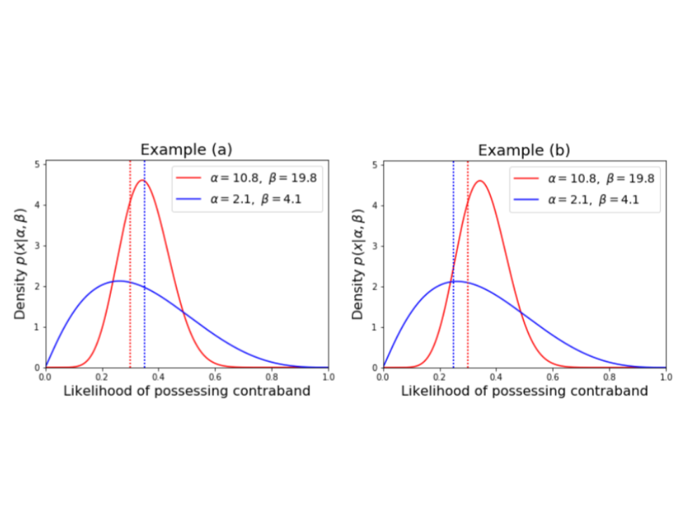

The benchmark test is one of the simplest tests aimed at measuring bias in decision-making.
Essentially, it compares the rate at which white and minority groups are treated favorably.
In this instance, the rate being compared is the rate at which minority and white drivers
who are stopped by the DPS are searched for contraband. If white drivers stopped by the DPS
are searched less frequently than minority drivers stopped by the DPS, then one could claim that
the DPS' officers are discriminating against minority drivers by giving white drivers favorable treatment through more lenience
in their searching practices.
The primary strength and limitation of this test both come from its simplicity. Because the test
is quite simple, it is easy to understand: if white drivers are searched less frequently than minority drivers, it is pretty intuitive that a reason for this
might be an unfair degree of lenience towards white drivers. However, this test has a significant statistical limitation.
It may in fact be the case that drivers of different racial groups stopped by the DPS
could have different likelihoods of possessing contrabands, thereby justifying different search rates for racial groups.
While there may be strongly differing opinions as to whether or not these difference in likelihoods across racial groups
exist, the fact remains that it is very hard to prove either way, limiting the certainty one can ascribe this test.
A refinement to this method is to use a regression based on this benchmark statistic that controls for the demographic composition
and crime rate of certain areas. This was done in an
analysis of New York's Stop and Frisk policy by Columbia statisticians Andrew Gelman, Jeffrey Fagan and Alex Kiss.
This method has been used with some effectiveness in a court of law to demonstrate the presence of racial profiling in policing practices:
this New Yorker
article presents an interesting look at how this statistical method (among others) was interpreted in a court of law.
So while this refined version of the benchmark test does have some legal precedent suggesting it is effective at determining the presence of racial profiling in policing practices, it still does not address the underlying assumption that rates across racial groups should be equal,
not accounting for the possibility of different risk likelihoods for different racial groups.
To read more about this test and its limitations, refer to
The Problem of Infra-marginality in Outcome Tests for Discrimination,
a paper by Camelia Simiou, Sam Corbett-Davies and Sharad Goel, all of Stanford University.
The primary limitation of the benchmark test is the fact that it potentially contains some omitted variable bias: in this
case by not accounting for the potential of different likelihoods for possessing contraband across racial groups.
The outcome test attempts to address this limitation by focusing not on the favorability demonstrated by rates of certain decisions (e.g. the rate officers decide to search stopped drivers),
but rather on the success rate of that decision: in this case, the rate at which driver searches turn up contraband. While the rates at which drivers are searched could reasonably vary
across racial groups, if the decision to search was made with a similar risk threshold across racial groups then the rate at which these searches turned up contraband would be about the same.
If the recovery rates for these searches are higher for white drivers, then one could conclude that the risk threshold needed to search a white driver is higher than a minority driver, implying some favorable
treatment for white people and discrimination against minority groups.
The strength of this test is that, like the benchmark test, it is also quite simple to calculate and interpret. By addressing the issue of ommitted variable bias it is also slightly more rigorous.
However, there is a major statistical limitation to this test related to the assumption that rates of contraband recovery can be equated to some applied risk threshold.
An example can demonstrate the problem with this assumption this quite well:
Assume there are two groups of drivers stopped by the DPS.
Members of Group A either have a 1% or a 75% chance of possessing contraband, whereas members of Group B either have a 1% or a 50% chance of possessing contraband.
Assume also that officers can distinguish clearly between those with low risk and high risk. If officers search all drivers with at least a 10% chance of possessing contraband,
then the rate of contraband recovery from searches of Group A would be 75% and the rate for Group B would be 50%. Comparing these two rates,
one might conclude that Group B is being discriminated against, because searches against their group turn up less contraband, thereby implying a lower risk threshold.
However, the risk threshold in this example is the same for both groups!
More generally, the problem with this test has to do with the distribution of likelihoods: in this instance, the likelihood of possessing contraband for different racial groups.
As the example above demonstrates, these distributions of risk can exist such that the same risk threshold can be applied across racial groups but return different rates of recovery.
This problem is known as infra-marginality. To read more about infra-marginality and this test, refer to
The Problem of Infra-marginality in Outcome Tests for Discrimination,
a paper by Camelia Simiou, Sam Corbett-Davies and Sharad Goel, all of Stanford University.
The threshold test aims to overcome the problem of infra-marginality associated with other tests such as the benchmark test.
As previously mentioned, the problem of inframarginality relates to differing risk distributions or likelihoods that a suspect is carrying contraband, and search threshold of suspects.
Consider the following two scenarios which both show figurative distributions for red and blue populations, marked by the solid line distributions.

Each distribution can be viewed as an assessment made by the officer on the stopped individual's likelihood of carrying contraband. Think of it as once the officer has made the stop; they are assessing available information such as time of day; vehicle make; location of stop; driver age, race and sex; signs of nervousness along with others to assign a single number to that individual / stop representing the likelihood that individual is carrying contraband (e.g. weapons and/or drugs). If this single number (%) is above a particular threshold; the officer will conduct a search. i.e. the officers search everyone who has a likelihood of possessing contraband greater than the search threshold.
The thresholds are marked by the dotted vertical lines for each of the respective distributions. In each case, the search rate would be computed as the area under the curve; and to the right of the threshold. It is the proportion of total stops who are searched.
Comparing Examples (a) and (b), it is evident the variability in likelihood a suspect is carrying contraband for the blue population is a lot more dispersed in Example (b) relative to the red population; whereas for Example (a), the red and blue population show similar distributions of likelihood that either are carrying contraband. In Example (a) above, the threshold for the red population is 30%, compared with a higher threshold of 35% for the blue population. For Example (b), again the red threshold if 30%; however the blue threshold is lower at 25%.
The hit rate is calculated as the mean of the Bayesian conditional risk distribution of likelihood a suspect is carrying contraband given the subject is searched (i.e. given the original likelihood was above the threshold). In practical terms, you can rescale the distribution to the right of the threshold by dividing by (1- search rate); and calculate the mean of the rescaled conditional distribution.
For both examples above:
Red drivers are searched more often than blue drivers (71% vs. 64%), and
Searches of red drivers recover contraband less often than searches of blue drivers (39% vs. 44%)
The takeaway here is there are many different combinations of risk distributions and thresholds which stem from the same search rate (Si / total stops) and hit rate (Hi / Si), where Si = number of searches of race i; and Hi = number of stops resulting in contraband recovery (hits) from race i.
The following steps provide technical detail on how the threshold test was fitted for this analysis. The focus of our analysis Texas traffic stops between 2006-2015:
- The analysis was restricted to the 100 largest counties (by total number of stops) in Texas. This is to mitigate the challenge resulting from fitting Bayesian models to groups with small sample sizes.
- For each race and every department the search rate Srd and hit rate Hrd were calculated.
- The risk distributions for likelihood a particular race in a particular county (department) is carrying contraband is assumed to follow a Beta distribution and can be uniquely specified using two parameters 𝜆rd and 𝜙rd. There is a lot more detail on this approach in The Problem of Infra-marginality in Outcome Tests for Discrimination paper. One of the assumptions I will mention which is one of the more subjective assumptions in applying this test is the the parameterization of these Beta distributions. It is assumed that 𝜆rd = g(𝜆r, 𝜆d) and 𝜙rd = h(𝜙r, 𝜙d) where 𝜆r, 𝜙r and 𝜙d, 𝜆d are parameters dependent on race only; and department (county) only without an interaction term. This assumption needs further exploration to validate if suitable for the populations we are looking at.
- A Bayesian model fitting approach (using Rstan) was applied to estimate risk distributions and race specific thresholds by department (county) using the observed Srd and Hrd estimates.
- The model fit outputs and estimated race specific thresholds were reported.
For the implementation for this website, the veil darkness is followed in general manner. First, the dataset for all Texas stops collected and cleaned by the Stanford Open Policing Project is used. Then the data without both the latitude and longitude attributes are left out from the dataset. A date time variable with the minute to which the stop occurred then is created from the date and stop time in the record. The metric for evaluating the biases is by looking at the ratio of driver races in stops before and after end of civil twilight (the sun is six degrees below the horizon). To get the end of civil twilight time for each day that had at least one stop. A popular python package PyEphem for nautical and astronomy was used. The PyEphem can take a date as an input and output the end of civil twilight time for a particular longitude and latitude combination. The average of latitudes and longitudes of all stops within each county. Then, this coordinate is used for all stops for that particular county. The total stops for each race before darkness is divided by the total stops all races before darkness, Rb. the total stops for each race after darkness is divided by the total stops all races after darkness, Ra.